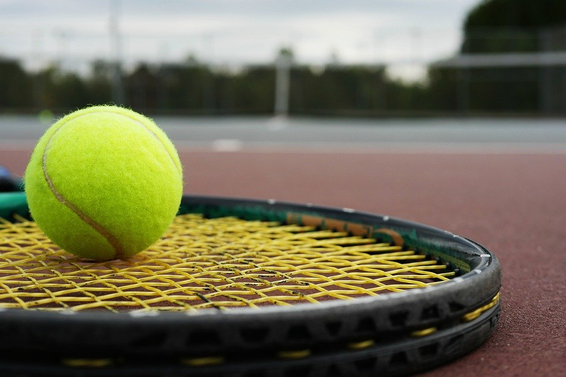

Hobby's
Bovenop de standaard hobby’s zoals het op café gaan met vrienden en het voetbal kijken op tv bespreek ik hieronder mijn hobby’s. Dit zijn de hobby’s waar ik het meeste tijd insteek en het meeste plezier aan beleef.
Tennis
Mijn favoriete hobby is de balsport tennis. Vanaf kleins af aan heb ik verschillende sporten uitgeprobeerd ik heb proberen te voetballen bij KFC Houtvenne.
Dit heb ik een aantal jaren geprobeerd. Het probleem was dat het talent er niet was en ik nogal een competitief persoon ben, dit was de reden dat ik er geen plezier meer vond in het voetballen. Daardoor heb ik de beslissing gemaakt om te stoppen met te voetballen en een andere uitdaging op te zoeken. Na zoals eerder vermeld verschillende sporten uit te porberen ben ik bij het tennissen aangekomen. Deze sport speel ik al vanaf mijn 8 jaar. Het is een sport waarbij je veel moet nadenken over je tegenstander en waar je de bal wil gaan plaatsen. Ik tennis bij tennisclub Sportiva in Hulshout ik train er wekelijks. Echt competitie ben ik niet aan het spelen, daar wil ik men techniek nog voor verbeteren.

Karting
Mijn tweede hobby is het karting. Deze sport komt omdat ik altijd een interesse heb gehad in motorsport. Deze heb ik van kleins af aan meegekregen omdat mijn vader vroeger een amateur rallypiloot was. Rally zelf is een hobby die ik heel graag zou willen beoefenen, ik heb spijtig genoeg niet de mechanische knowhow om een rally wagen te bouwen. Één van de nadelen aan de hobby en vooral motorsport in het algemeen is dat er een serieus prijskaartje aanhangt. Daarom ben ik recreatief gaan karten. Het is een sport die me de nodige adrenaline geeft. De reden waarom ik graag motorsport zou willen beoefenen is omdat ik houd van snelheid. De beslissingen maken over hoe je de volgende bocht gaat nemen, wanneer je remt om zo min mogelijk snelheid te verliezen zijn allemaal redenen waarom ik deze sport zo speciaal en geweldig vindt. Het oefenen heeft zijn vruchten afgeworpen want het team dat ik samen met een vriend van me vorm heeft onlangs nog een tweede plaats op een hobbyrace gebracht.

multimedia
Als laatste van mijn hobby’s is het kijken van films/series en het lezen van boeken en strips. Ik kan me hier uren in verdiepen zowel een goede film en een goed boek. Niet alleen de standaard van films zoals we ze kennen interesseren mij. Tegenwoordig ben ik gegrepen door de media van Azië. Zowel hun geanimeerde series als de boeken en strips waar ze op gebaseerd zijn. Hun stijl die ze brengen kunnen verhalen een andere wending geven. Het zijn dit soort verhalen die mij zo aanspreken en aantrekken aan hun cultuur hieronder is een lijst met mijn favoriete verhalen.
Tokyo ghoul (manga)
Beserk
The Lord of the Rings
Mobile Suit Gundam: Iron-Blooded Orphans
Vikings
index
cv
ervaring
ervaring
contact